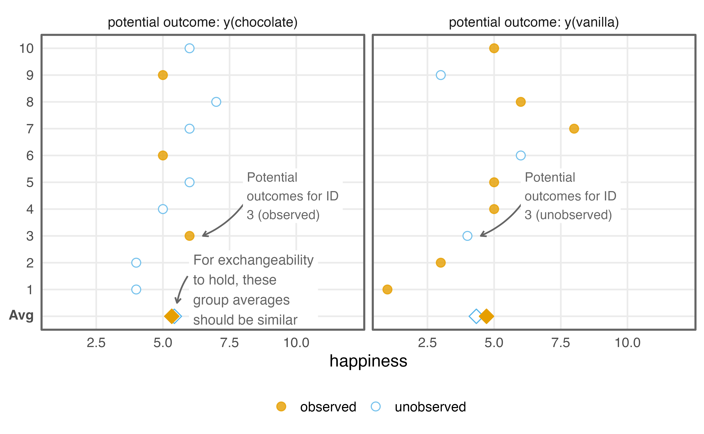
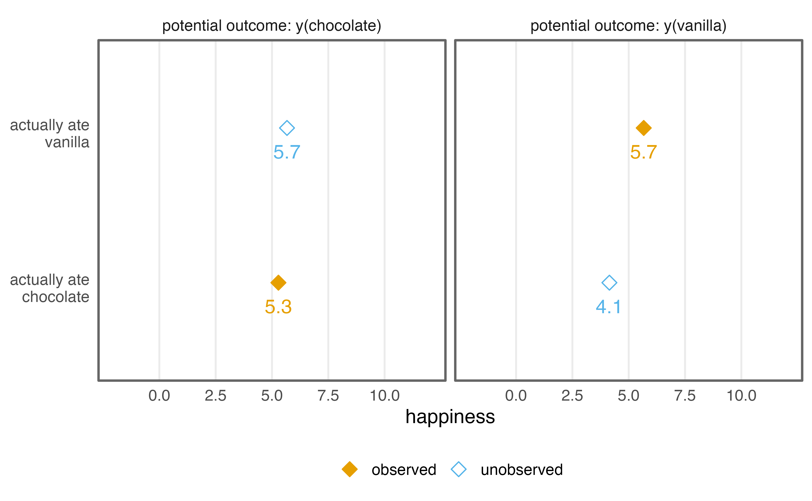
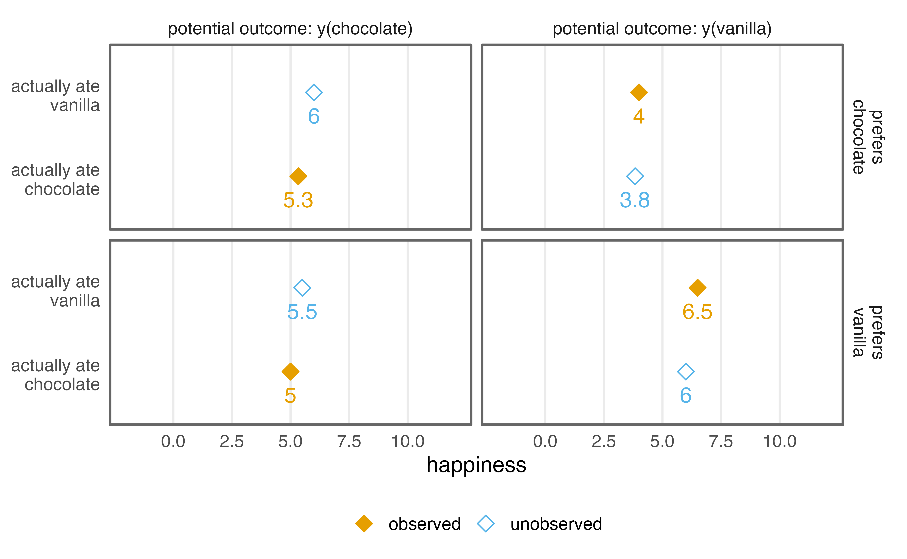
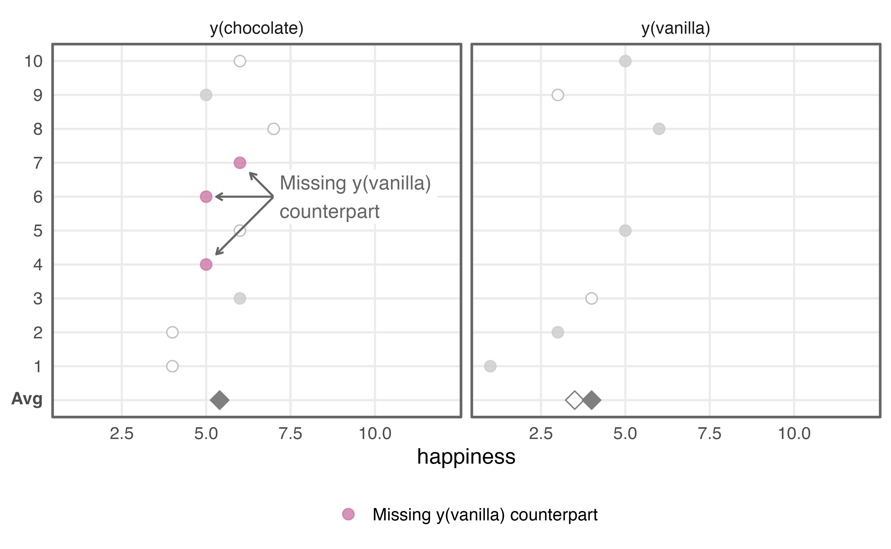
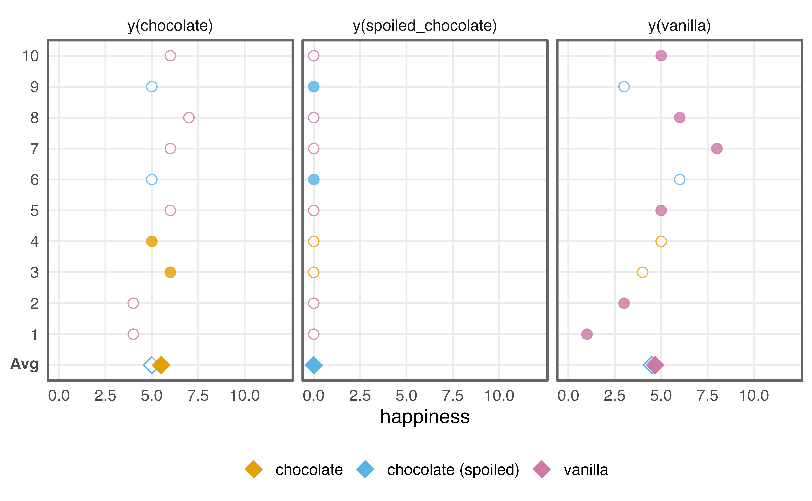
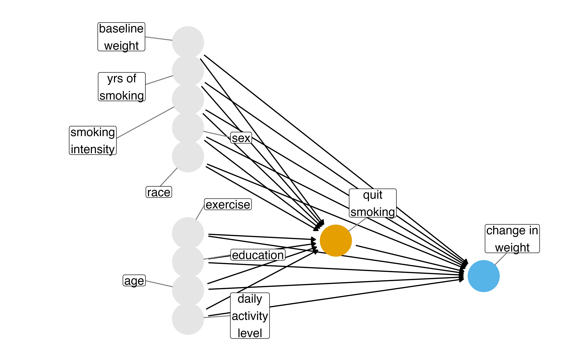

Causal Assumptions
Stanford University
Are they good proxies for each other?
| Person | Observed | Missing counterfactual |
|---|---|---|
| Ice-T | Abandons criminal life: fame and fortune | Does one more heist: 35 years in prison |
| Spike | Does one more heist: 35 years in prison | Abandons criminal life: fame and fortune |
They differ in more than their choices
- Ice-T’s decision was not the only factor in his success: he had enough musical talent to make a career of it
- Spike might differ in hard-to-measure ways, which makes him a poorer proxy than he first seems
We must rely on statistical techniques to help construct these unobservable counterfactuals from observed data
Potential outcomes
- Factual and counterfactual outcomes are two realizations of potential outcomes
- Say the exposure has two levels,
x = continuedoing jewel heists orx = quit - There are two potential outcomes,
y(continue)andy(quit), and only one will be realized
The missing potential outcome
- One potential outcome is observable and one is missing; early causal inference methods were framed as missing data problems
- We’re missing
y(continue)for Ice-T andy(quit)for Spike, so we can’t calculate their individual causal effects
Causal assumptions allow us to imbue observed data with the meaning of potential outcomes and their analysis with causal effects
Does chocolate make you happier?
Suppose some happiness index exists that ranges from 1 to 10
# A tibble: 1 × 3
avg_chocolate avg_vanilla avg_causal_effect
<dbl> <dbl> <dbl>
1 5.4 4.6 0.8Both potential outcomes are known
| ID |
Potential outcomes
|
Causal effect
|
|
|---|---|---|---|
| y(chocolate) | y(vanilla) | y(chocolate) - y(vanilla) | |
| 1 | 4 | 1 | 3 |
| 2 | 4 | 3 | 1 |
| 3 | 6 | 4 | 2 |
| 4 | 5 | 5 | 0 |
| 5 | 6 | 5 | 1 |
| 6 | 5 | 6 | -1 |
| 7 | 6 | 8 | -2 |
| 8 | 7 | 6 | 1 |
| 9 | 5 | 3 | 2 |
| 10 | 6 | 5 | 1 |
We can calculate every individual causal effect
In reality, each person eats one flavor
set.seed(11)
data_observed <- data |>
mutate(
exposure = if_else(
rbinom(n(), 1, 0.5) == 1,
"chocolate",
"vanilla"
),
observed_outcome = case_when(
exposure == "chocolate" ~ y_chocolate,
exposure == "vanilla" ~ y_vanilla
)
)
data_observed |>
group_by(exposure) |>
summarise(avg_outcome = mean(observed_outcome))# A tibble: 2 × 2
exposure avg_outcome
<chr> <dbl>
1 chocolate 5.33
2 vanilla 4.71We’re a little off because of the low sample size
Only the observed outcome remains
| ID |
Potential outcomes
|
Causal effect
|
|
|---|---|---|---|
| y(chocolate) | y(vanilla) | y(chocolate) - y(vanilla) | |
| 1 | 1 | ||
| 2 | 3 | ||
| 3 | 6 | ||
| 4 | 5 | ||
| 5 | 5 | ||
| 6 | 5 | ||
| 7 | 8 | ||
| 8 | 6 | ||
| 9 | 5 | ||
| 10 | 5 | ||
We can’t calculate the individual causal effect
The three assumptions
- Unconfoundedness methods assume exchangeability, positivity, and consistency
- Knowing a method’s assumptions is essential for using it correctly; these are sometimes called identifiability conditions
Exchangeability
Exposure status is independent of the potential outcomes; that is, each exposure group has the same potential outcomes on average

What if we mixed up the labels?
Say we accidentally gave chocolate to the “vanilla” group and vanilla to the “chocolate” group
mix_up <- function(flavor) {
if_else(flavor == "chocolate", "vanilla", "chocolate")
}
data_observed <- data_observed |>
mutate(
exposure = mix_up(exposure),
observed_outcome = case_when(
exposure == "chocolate" ~ y_chocolate,
exposure == "vanilla" ~ y_vanilla
)
)
data_observed |>
group_by(exposure) |>
summarise(avg_outcome = mean(observed_outcome))# A tibble: 2 × 2
exposure avg_outcome
<chr> <dbl>
1 chocolate 5.43
2 vanilla 4.33Flavor assignment is independent of the potential outcomes
What if participants chose their own flavor?
set.seed(113)
data_observed_exch <- data |>
mutate(
prefer_chocolate = y_chocolate > y_vanilla,
exposure = case_when(
# people choose the flavor they prefer 80% of the time
prefer_chocolate ~ if_else(
rbinom(n(), 1, 0.8) == 1,
"chocolate",
"vanilla"
),
!prefer_chocolate ~ if_else(
rbinom(n(), 1, 0.8) == 1,
"vanilla",
"chocolate"
)
),
observed_outcome = case_when(
exposure == "chocolate" ~ y_chocolate,
exposure == "vanilla" ~ y_vanilla
)
)
data_observed_exch |>
group_by(exposure) |>
summarise(avg_outcome = mean(observed_outcome))# A tibble: 2 × 2
exposure avg_outcome
<chr> <dbl>
1 chocolate 5.29
2 vanilla 5.67Now it seems like vanilla makes you happier!
The groups are no longer exchangeable

Preference influences both flavor and happiness
Conditional exchangeability
Exchangeability can hold within preference groups

But few values fall in each combination
Positivity
- Everyone has a non-zero probability of each exposure level
- Stochastic violations are chance occurrences with no observations for a given exposure level
- Structural violations happen when an individual cannot receive an exposure level by definition
A stochastic violation
Participants choose the flavor they prefer 80% of the time, as before
# A tibble: 4 × 3
prefer_chocolate exposure n
<lgl> <chr> <int>
1 FALSE chocolate 0
2 FALSE vanilla 3
3 TRUE chocolate 7
4 TRUE vanilla 0Positivity must hold within the covariates needed for exchangeability
A structural violation: an allergy to vanilla
Everyone is randomized to a flavor, as before
set.seed(1)
data_observed_struc <- data_observed_struc |>
mutate(
allergy = rbinom(n(), 1, 0.3) == 1,
# `y_vanilla` is impossible for those with an allergy
exposure = if_else(allergy, "chocolate", exposure),
y_vanilla = if_else(allergy, NA, y_vanilla),
observed_outcome = case_when(
allergy ~ y_chocolate,
exposure == "chocolate" ~ y_chocolate,
exposure == "vanilla" ~ y_vanilla
)
)
data_observed_struc |>
group_by(exposure) |>
summarise(avg_outcome = mean(observed_outcome))# A tibble: 2 × 2
exposure avg_outcome
<chr> <dbl>
1 chocolate 5.4
2 vanilla 4 For those with a vanilla allergy, y(vanilla) is not defined
Undefined potential outcomes

We can collect more data, use a statistical model to extrapolate, add eligibility criteria, or change the estimand
Consistency
- The causal question you claim you are answering is consistent with the one you are actually answering
- The potential outcome of a given treatment value equals the value we actually observe when someone is assigned that treatment value
It seems almost silly when you say it. What else would it be?
Two ways consistency fails
- Poorly-defined exposure: multiple treatment versions exist, from surgeries to income to education
- Interference: the outcome for any subject depends on another subject’s exposure
Two containers of chocolate, one spoiled
Everyone has a third potential outcome, y_spoiled_chocolate, which is 0
set.seed(11)
data_observed_poorly_defined <- data |>
mutate(
exposure_unobserved = case_when(
rbinom(n(), 1, 0.25) == 1 ~ "chocolate (spoiled)",
rbinom(n(), 1, 0.25) == 1 ~ "chocolate",
.default = "vanilla"
),
observed_outcome = case_when(
exposure_unobserved == "chocolate (spoiled)" ~ y_spoiled_chocolate,
exposure_unobserved == "chocolate" ~ y_chocolate,
exposure_unobserved == "vanilla" ~ y_vanilla
),
# both containers are recorded as "chocolate"
exposure = if_else(exposure_unobserved == "vanilla", "vanilla", "chocolate")
)
data_observed_poorly_defined |>
group_by(exposure) |>
summarise(avg_outcome = mean(observed_outcome))# A tibble: 2 × 2
exposure avg_outcome
<chr> <dbl>
1 chocolate 2.75
2 vanilla 4.67The true causal effect of unspoiled chocolate is 0.8, but our estimate is about -1.9
The chocolate group is a mixture

We’re treating fresh and spoiled chocolate as the same exposure; the same goes for brands, timing, and portion size
Separate the potential outcomes
Say we tested the containers after the experiment and know which ones were spoiled
# A tibble: 3 × 2
exposure_unobserved avg_outcome
<chr> <dbl>
1 chocolate 5.5
2 chocolate (spoiled) 0
3 vanilla 4.67Now we’re back to the right answer because we’ve correctly separated the potential outcomes
The data match potential outcomes

There will almost always be some consistency violation; the question is whether it is meaningful
Interference
- An individual’s exposure impacts another’s potential outcome, as when someone’s vaccination affects someone else’s risk
- Here, each person has a partner, and having a partner with a different flavor increases happiness by two units
Each person has a partner
Randomize each individual and their partner
set.seed(37)
data_observed_interf <- data |>
mutate(
exposure = if_else(rbinom(n(), 1, 0.5) == 1, "chocolate", "vanilla"),
exposure_partner = if_else(
rbinom(n(), 1, 0.5) == 1,
"chocolate",
"vanilla"
),
observed_outcome = case_when(
exposure == "chocolate" & exposure_partner == "chocolate" ~
y_chocolate_chocolate,
exposure == "chocolate" & exposure_partner == "vanilla" ~
y_chocolate_vanilla,
exposure == "vanilla" & exposure_partner == "chocolate" ~
y_vanilla_chocolate,
exposure == "vanilla" & exposure_partner == "vanilla" ~ y_vanilla_vanilla
)
)
data_observed_interf |>
group_by(exposure) |>
summarise(avg_outcome = mean(observed_outcome))# A tibble: 2 × 2
exposure avg_outcome
<chr> <dbl>
1 chocolate 6.25
2 vanilla 6.33Each person has three counterfactuals now, and these averages don’t estimate any of them
Specify the potential outcomes
# A tibble: 4 × 3
exposure exposure_partner avg_outcome
<chr> <chr> <dbl>
1 chocolate chocolate 5.5
2 chocolate vanilla 7
3 vanilla chocolate 6.75
4 vanilla vanilla 5.5 One way to combat interference is to change the unit: randomize the partnerships, a cluster randomized trial
Randomize the partnerships
set.seed(11)
partners <- tibble(
partner_id = 1:5,
exposure = if_else(rbinom(5, 1, 0.5) == 1, "chocolate", "vanilla")
)
partners_observed <- data |>
left_join(partners, by = "partner_id") |>
mutate(
exposure_partner = exposure,
observed_outcome = case_when(
exposure == "chocolate" & exposure_partner == "chocolate" ~
y_chocolate_chocolate,
exposure == "vanilla" & exposure_partner == "vanilla" ~ y_vanilla_vanilla
)
)
partners_observed |>
group_by(exposure) |>
summarise(avg_outcome = mean(observed_outcome))# A tibble: 2 × 2
exposure avg_outcome
<chr> <dbl>
1 chocolate 5.5
2 vanilla 4.38There is no interference between different partner sets
Malaria nets, revisited
Malaria nets and the assumptions
- Exchangeability: we saw what can happen with an unmeasured confounder, genetic resistance to malaria
- Positivity: a violation would occur if any household would always or never use a bed net, or if no one of low economic status in cold weather ever used one
Consistency and interference
- Consistency: a “bed net” can mean many things; does the manufacturer matter? The type of insecticide? The amount?
- Interference is a real problem for bed-net research, though households as the unit reduce some of it
When do study designs support causal inference?
Randomized trials
- In the limit, we expect exchangeability: randomization is the only cause of exposure
- Randomization guarantees positivity so long as no one has a deterministic exposure
- Trials help, but do not guarantee, consistency; interference can still happen
Trials in practice
- In actual trials, exchangeability can fail by chance, people do not adhere to their assigned exposure, and people drop out
- Observational studies have none of a trial’s guarantees, even ideal ones
A randomized design is sometimes called an A/B test
Assumptions solved by study design
| Assumption | Ideal randomized trial | Realistic randomized trial | Observational study |
|---|---|---|---|
| Consistency (well-defined exposure) | 😄 | 🤷 | 🤷 |
| Consistency (no interference) | 🤷 | 🤷 | 🤷 |
| Positivity | 😄 | 😄 | 🤷 |
| Exchangeability | 😄 | 🤷 | 🤷 |
😄 solved by default, 🤷 solvable but not solved by default
Quitting smoking and weight gain
